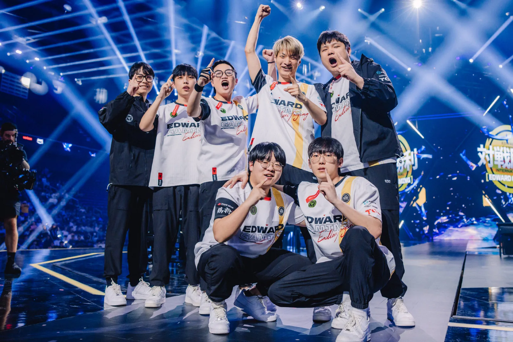
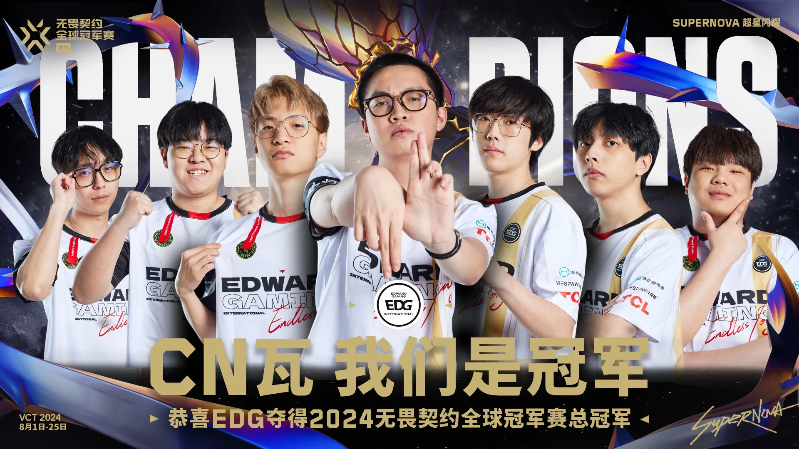
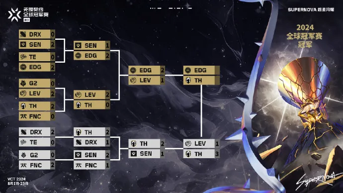
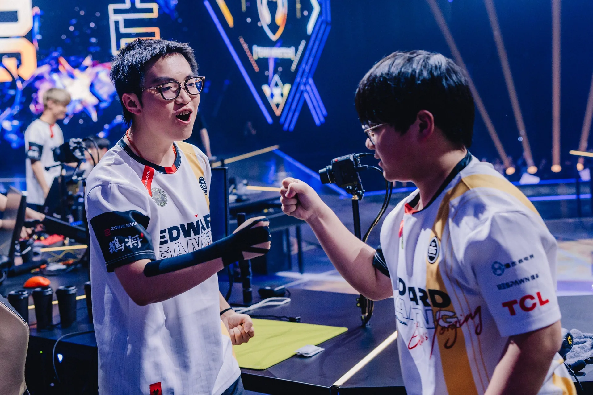
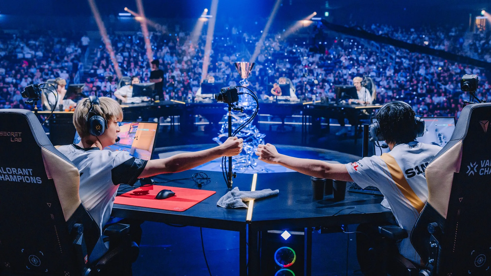
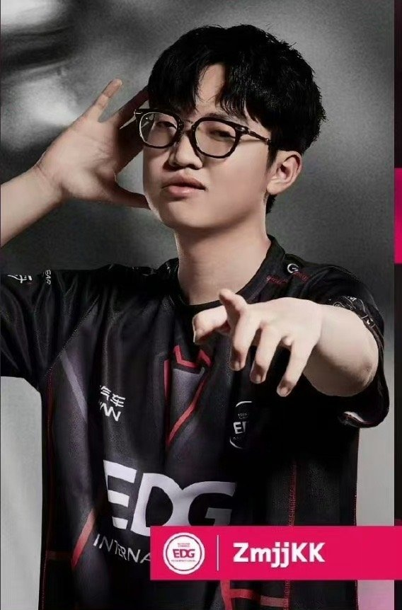
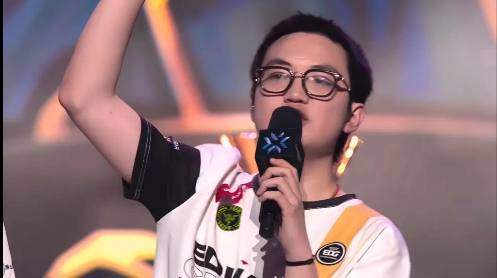
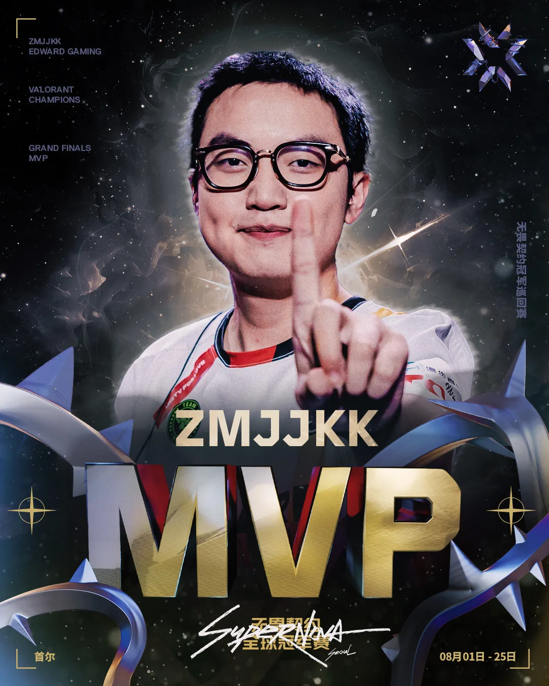
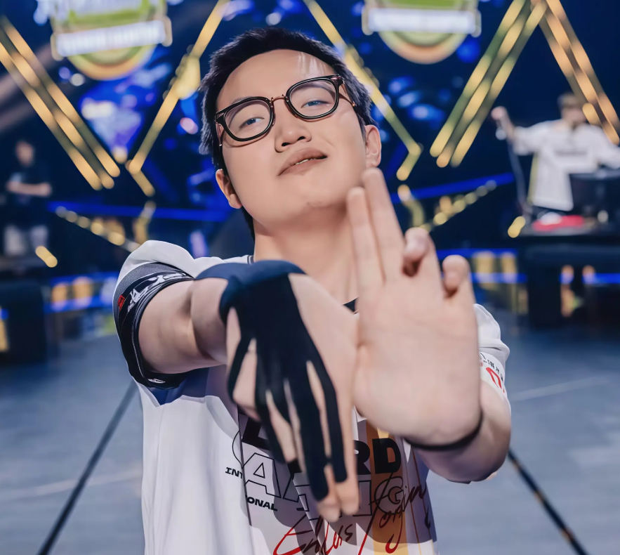

北京时间 8 月 25 日，为期近一个月的 2024 无畏契约全球冠军赛在 INSPIRE Arena 正式落下帷幕，来自 VCT CN 联赛的队伍 EDG 与 EMEA 联赛队伍 TH 向今年无畏契约最高荣誉展开最终的争夺。EDG 最终以 3-2 击败对手，成功捧起总冠军奖杯。这不仅是 EDG 首次夺得无畏契约全球赛事冠军荣誉，同时，也创造了 CN 赛区在国际赛事上的最佳战绩。

作为 CN 赛区的一号种子，EDG 在本届全球冠军赛，不断进化并且实现着突破。晋级八强后，EDG 不断刷新着队伍及 VCT CN 联赛赛区的历史最好成绩。一路过关斩将，先后击败 TE、SEN 以及 LEV，以淘汰赛全胜的战绩晋级 2024 无畏契约全球冠军赛总决赛。

作为在今年上海大师赛拿到亚军的队伍，TH 展现出了韧性与强劲的实力，在淘汰赛次轮不敌美洲一号种子 LEV 后，TH 落入败者组。但在随后的比赛中，TH 先后击败 SEN，并且在 24 日进行的败者组决赛中，以 3-1 成功「复仇」LEV，拿到总决赛门票。

8 月 25 日，EDG 在总决赛中与 TH 展开了强强对话。在图一的隐世修所，EDG 率先赢下手枪局连下两分，而 TH 随后强势反击下的猛烈攻势让 EDG 上半场仅拿三分，下半场虽然 EDG 迅速调整状态连续追分，但仍不敌 TH 遗憾落败。

在图二的日落之城中，首局失利的 EDG 率先拿下手枪局后，乘胜追击连下 9 分，虽然 TH 在下半场追回几分，但随着 ZmjjKK（郑永康）和 Smoggy（张钊） 精彩的「五杀」「四杀」操作，顺利拿下比赛，将大比分扳平 1-1。在赛后，教练 Muggle（唐时俊）表示，这张图的胜利，对于队伍的整体士气来说非常重要。

在图三莲花古城，EDG 延续了火热的手感和状态，CHICHOO（万顺治）拿下 ACE 后，双方比分交替上升 6-6 结束上半场。下半场开始两队比分十分焦灼，在多次平分之后，EDG 凭借 S1Mon（谢孟勋）残局的「三杀」操作及全队选手的默契配合，三连胜赢下图三比赛胜利大比分 2-1 取得赛点。

在图四源工重镇，TH 开局率先发起进攻取得手枪局胜利，随后两队打的有来有回以 6-6 结束上半场，下半场开场后 TH 一路高歌猛快速取得较大领先，虽然 EDG 展开了顽强的反扑一度追平比分，但最终 TH 没有给 EDG 翻盘的机会，拿下比赛大比分来到 2-2。

来到图五幽邃地窟决胜局，EDG 开局快速稳住局势一直处于领先，以 8-4 领先结束上半场。下半场开启，nobody（王森旭）站了出来快速拉开比分，虽然 TH 展开了一波顽强的抵抗，但伴随着 ZmjjKK 的「四杀」，EDG 没有再给对手任何的机会，最终，以 3-2 成功击败 TH，捧起此次 2024 无畏契约全球冠军赛的冠军奖杯。凭借出色的表现，ZmjjKK 获得 2024 无畏契约全球冠军赛总决赛 MVP！

遇到我们的时候，你才是挑战者 狙击枪我起了对面就要输 面善打个D啊，喜欢我的战斗脸吗

回到顶部